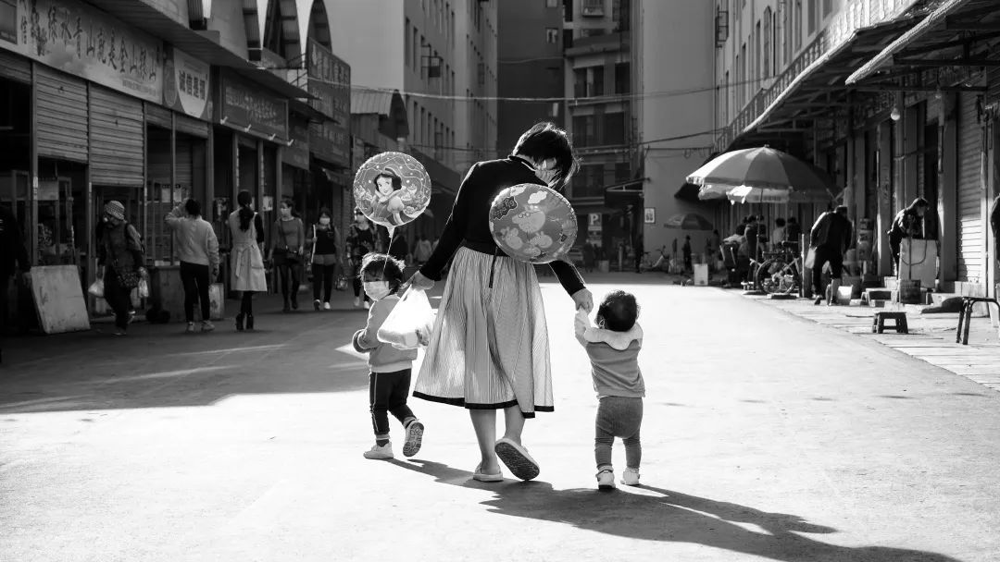
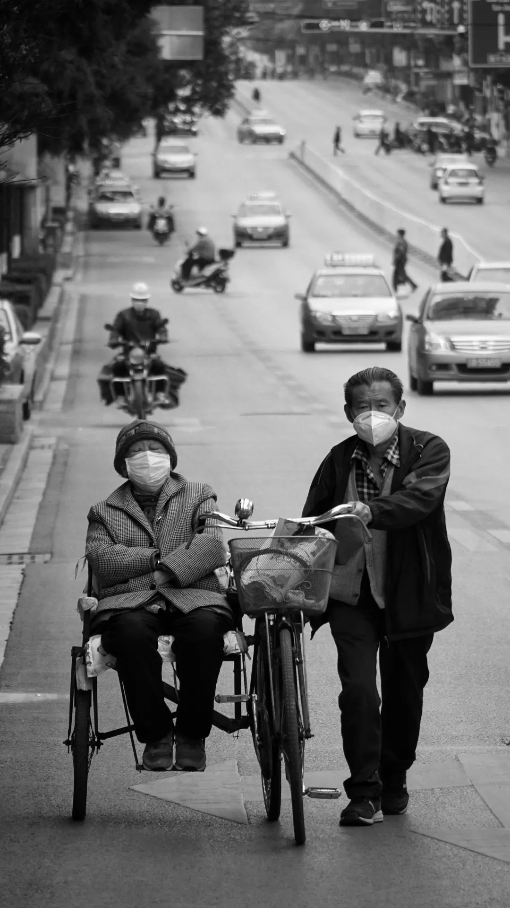
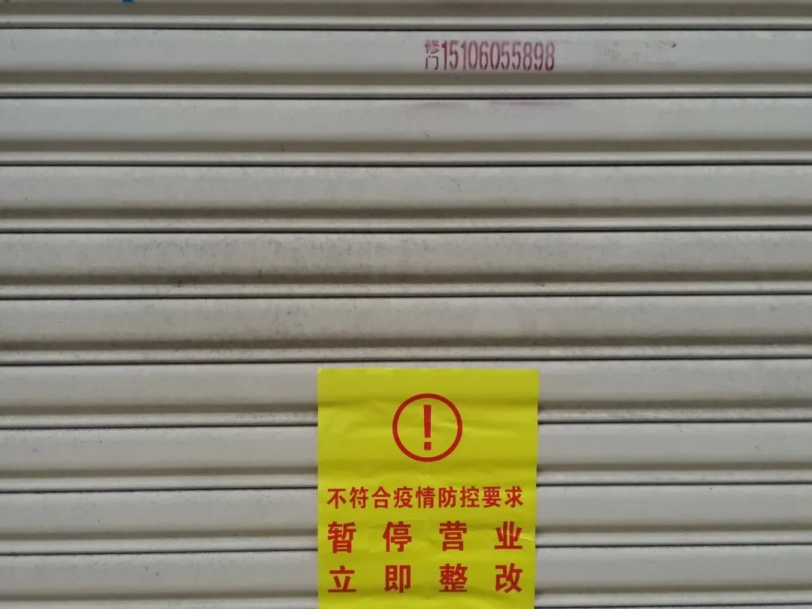
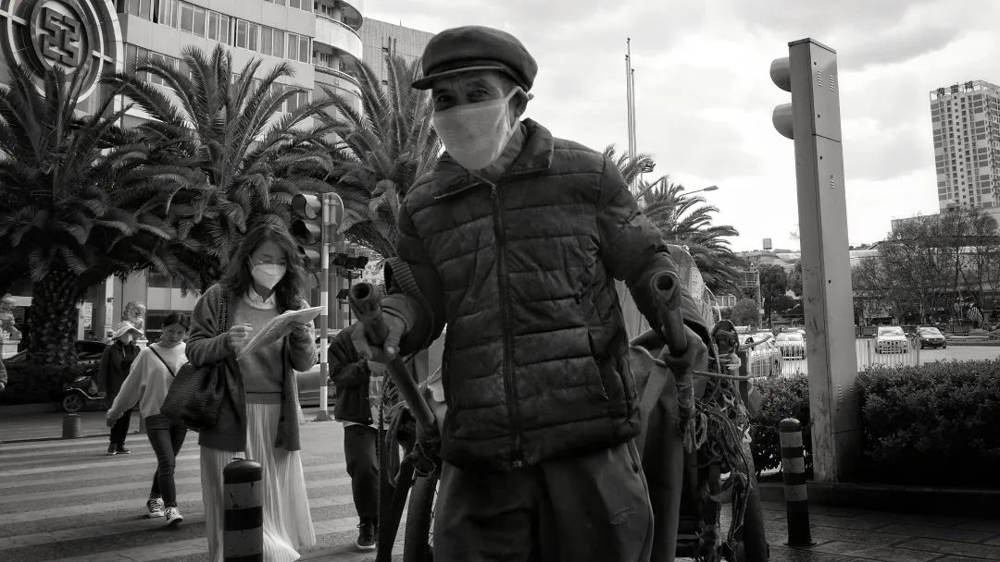
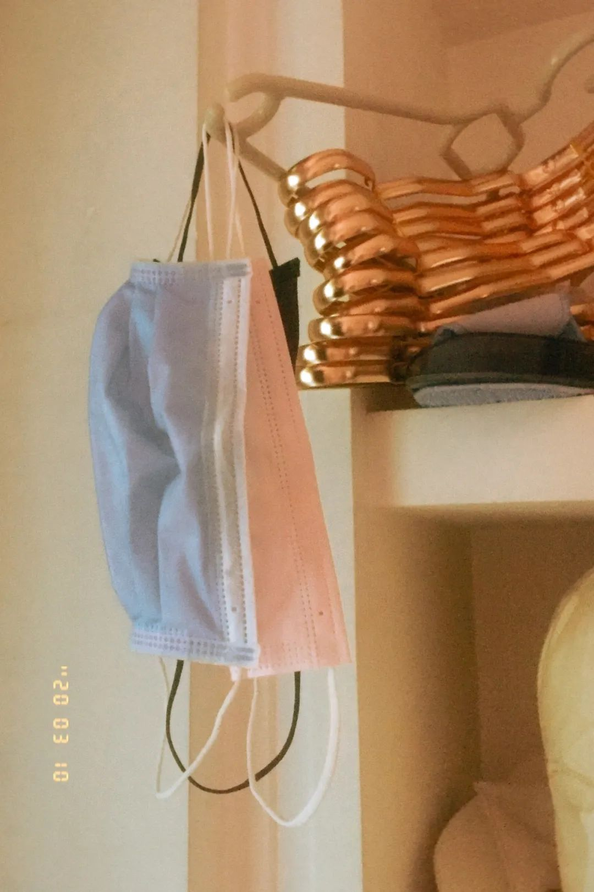

发热门诊医生发热了
原文链接 备份链接 经常是下午两点，护士长出去告诉挂号者，医生还没吃午饭。满满一房间的患者竟立刻安静下来，急忙为我让了一条“路”出来。 文 | 侯蔚琳 春节前，我们发热门诊突然转来一位新冠肺炎疑似者。我套上防护服，进入层流病房采集患者生命 …

《明天的记忆》第五期线上摄影展
2020年2月13日
A2N疫情志愿组发起深度内容项目之一
“明天的记忆”线上摄影展作品征集
用镜头定格时光
记录今天的冷暖悲喜
为明天注入前行的力量
第五期共有10组作品入选
观展时长不限
请各位观众自行安排看展时间
有序入场
『 策展方 』
A2N疫情志愿组·摄影线上展小组
Jessie贾、福福、咩咩杨、小安、Miya、丹青
『 参展人 』
谢雨潼、肘子、王靖媛、Icy、光合作用
2020
春日已至
柳色早黄浅，水文新绿微
疫情散，万物始

《气球》
谢雨潼
2020.03.07 云南 曲靖
点击空白处查看背后的故事
▼
疫情最严重的时候
街上空空荡荡
孩子们被禁锢在家里
买不到心爱的玩具
手上牵着的气球
是疫情好转的信号
是明天的希望

《相伴一生》
谢雨潼
2020.03.10 云南 曲靖
点空白处查看背后的故事
▼
阿公把自行车改成了三轮车
这样就可以和老伴时刻在一起
03年的非典
20年的新冠
一起经历了太多的风雨
更要珍惜彼此的陪伴
《明天，你好！》
王靖媛
2020.03.12 内蒙古 赤峰 林西县
点击空白处查看背后的故事
▼
阳光给予的温暖
明天你好
明天会更好

《讣告》
谢雨潼
2020.03.10 云南 曲靖
点击空白处查看背后的故事
▼
疫情总会结束，而死亡不会
讣告上的名字不断更换
就像病毒的名字一样
只有接受生命的荒谬
才能战胜荒谬

《整改》
肘子
2020.03.06 福建 泉州
点击空白处查看背后的故事
▼
拍摄于一处因不符合疫情防控要求
而关门整改的咖啡店门前

《为了明天》
谢雨潼
2020.03.10 云南 曲靖
点击空白处查看背后的故事
▼
疫情还未结束
聚众的禁令尚未解除
人才市场前却人头攒动
人们已经开始思考
明天要如何生存

《拉动的希望》
谢雨潼
2020.03.09 云南 曲靖
点击空白处查看背后的故事
▼
疫情期间，阿伯依然每天在街头奔波
靠拉车挣钱
他骄傲地告诉我们
自己在挣钱供儿子念大学
车上拉的不只是货物
还有他的希望

《久违的游戏》
谢雨潼
2020.03.07 云南 曲靖
点击空白处查看背后的故事
▼
疫情逐渐好转
父亲带着孩子
在拖车上游戏
这样无忧无虑的时刻
对于父子俩都久违了
《静待新生》
Icy
2020.02.25 湖北 武汉 武昌
点击空白处查看背后的故事
▼
封城中的生活
窗口所见
几乎成了全部世界
窗外的这棵梧桐
也是高龄老树了
保持着凛冬似的沉默
也许它才是最懂这自然规律的生物
守得住此刻寂静才能拥抱繁盛的夏天

《口罩自由》
光合作用
2020.02.25 福建 泉州
点击空白处查看背后的故事
▼
出门用过的口罩一直没敢丢

【明天的记忆】摄影作品
持！续！征！集！中！
欢迎扫码投稿～
「未经许可不允许任何形式的转载，否则必将追究法律责任」
排版：Miya

A2N疫情志愿组是
抗击新型冠状病毒肺炎的
民间志愿者小组
致力于传播真实、有价值信息
让人们认识到疫情的真实情况
从而更好地抵御病毒、减少传染

科普准确的疫情知识
收录最新及靠谱的疫情资讯
粉碎谣言，传播真实、有价值的信息
如果您和我们的目标一致
联系我们，与我们共同努力，共克时艰
“此后如竟没有炬火
我便是唯一的光”
微博关注
@A2N抗击新型冠状病毒
@A2N翻译科普资讯
扫码参与留言互动
↓ ↓ ↓

文章已于修改
原文链接 备份链接 经常是下午两点，护士长出去告诉挂号者，医生还没吃午饭。满满一房间的患者竟立刻安静下来，急忙为我让了一条“路”出来。 文 | 侯蔚琳 春节前，我们发热门诊突然转来一位新冠肺炎疑似者。我套上防护服，进入层流病房采集患者生命 …
原文链接 备份链接 在疫情期间，仅仅是湖北省妇幼保健院40天就有2207个新生儿降生。日均分娩量77人，最多的一天有108个新生儿来到这个世界。这些与疫情同时到来的孩子们，面临了新生儿物资的紧缺，和被感染的风险。 文｜许言 编辑｜桑柳 …
原文链接 备份链接 昨日收到close buildings的通知，重新开放不知何时。最近每天从网上接受着周遭的消息，从窗外看出去只有一小方路面，虽然依旧车流不息，每天傍晚依旧跑步的跑步，遛狗的遛狗，遛娃的遛娃，但颇有咫尺千里之感。掐指一 …
原文链接 备份链接 就像是武汉封城之后，许多网友开始制作自己的视频日记，这让世界了解了武汉的人们的日常与他们面对疫情的许多情绪。四十日谈也正在创建一个平台，用影像使不同国家的人们看到在意大利的人们的状态。 - 作者简介 - 秋凉，工作、居 …
原文链接 备份链接 意大利确诊数破千时，大部分英国人还在隔岸观火，有人甚至拿新冠病毒开玩笑。如今英国人聚集的社交网络上多的是祈祷上帝保佑的推文。有人调侃说，老外都跟在华人后面逛超市，华人买什么他们就买什么 文 |《财经》驻英国特约作者 文 …